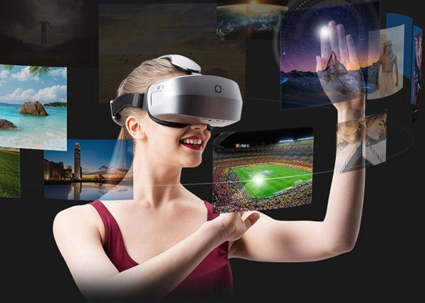

首页
关于我们
产品展示
新闻动态
加入我们
服务热线
400-0000-000
企业新闻
企业动态
新闻动态

头号玩家
VR：你看到的一切都是假象VR是Vitual Reality的缩写，翻译成中文就是“虚拟现实”。它是利用计算机生成的一种模拟环境，简而言之，参与的用户看到的场景和人物全是假象。相较传统的显示屏幕，比如：电脑显示屏，电视机，VR最大的突破就是全新的“沉浸感”......
游戏
社交
影视
VR设备
头号玩家
VR：你看到的一切都是假象VR是Vitual Reality的缩写，翻译成中文就是“虚拟现实”。它是利用计算机生成的一种模拟环境，简而言之，参与的用户看到的场景和人物全是假象。相较传统的显示屏幕，比如：电脑显示屏，电视机，VR最大的突破就是全新的“沉浸感”......
头号玩家
VR：你看到的一切都是假象VR是Vitual Reality的缩写，翻译成中文就是“虚拟现实”。它是利用计算机生成的一种模拟环境，简而言之，参与的用户看到的场景和人物全是假象。相较传统的显示屏幕，比如：电脑显示屏，电视机，VR最大的突破就是全新的“沉浸感”......
头号玩家
VR：你看到的一切都是假象VR是Vitual Reality的缩写，翻译成中文就是“虚拟现实”。它是利用计算机生成的一种模拟环境，简而言之，参与的用户看到的场景和人物全是假象。相较传统的显示屏幕，比如：电脑显示屏，电视机，VR最大的突破就是全新的“沉浸感”......
游戏
社交
影视
VR设备
VR社交公园
VR：你看到的一切都是假象VR是Vitual Reality的缩写，翻译成中文就是“虚拟现实”。它是利用计算机生成的一种模拟环境，简而言之，参与的用户看到的场景和人物全是假象。相较传统的显示屏幕，比如：电脑显示屏，电视机，VR最大的突破就是全新的“沉浸感”......
VR三体影视
VR：你看到的一切都是假象VR是Vitual Reality的缩写，翻译成中文就是“虚拟现实”。它是利用计算机生成的一种模拟环境，简而言之，参与的用户看到的场景和人物全是假象。相较传统的显示屏幕，比如：电脑显示屏，电视机，VR最大的突破就是全新的“沉浸感”......
VR暗黑之翼
VR：你看到的一切都是假象VR是Vitual Reality的缩写，翻译成中文就是“虚拟现实”。它是利用计算机生成的一种模拟环境，简而言之，参与的用户看到的场景和人物全是假象。相较传统的显示屏幕，比如：电脑显示屏，电视机，VR最大的突破就是全新的“沉浸感”......
上一页
1
下一页